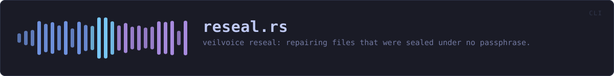

crates/veilvoice-cli/src/reseal.rs
veilvoice-cli · 261 lines · read the source here · or on GitHub
veilvoice reseal: repairing files that were sealed under no passphrase.
Why this command exists
veilvoice_crypto::reseal has the account of the fault. In short: releases 0.1.15 to 0.1.22 could seal a recording under an empty passphrase while reporting that it had been sealed with the app lock, and a file in that state opens for anybody who has it.
Nothing about such a file is visibly wrong, so there is nothing for a person to look for. The only way to find them is to try the empty passphrase on each file and see which ones open, which is what this does.
It shows the list before it asks for anything
The sweep runs first and prints what it found, including the files that are sealed properly, so the number of files checked is on the screen next to the number that need repairing. Only then is a passphrase asked for, and only if there is something to repair. --dry-run stops after the list.
The passphrase is proved against the lock first
A mistyped passphrase here would reseal every affected recording under a passphrase nobody knows, which is a worse outcome than the fault. So where this machine has an app lock, the passphrase has to open it before anything is written, through the same rate-limited LockStore::unlock the window and veilvoice lock use.
Where there is no lock, there is nothing to prove it against, and it is asked for twice instead. That case is real: somebody who reset their lock after 0.1.22 still has the recordings it sealed.
In plain words
Finds recordings that an older VeilVoice locked with a blank password by mistake, and locks them properly with your real one. It shows you the list first, and it does not touch anything that was already locked properly.
WHAT THIS FILE CONTAINS
261 lines defining 5 functions (1 public), 0 types and 0 constants. Everything below is read out of the source, so it cannot disagree with the code.
What happens when it runs. These are the ways in: public, and nothing else in this file calls them, so they are what an outside caller reaches first.
runline 46 · Run the repair.
reachesapplock,ask,print_reach,where_to_look
WHAT CALLS WHAT
The functions this file defines, and the calls between them. An edge means the callee's name appears, called, inside the caller's body. This is a syntactic reading, not a type-resolved one.
The same graph as Mermaid source
%%{init: {"theme":"base","themeVariables":{"background":"#1a1b26","primaryColor":"#1f2335","primaryTextColor":"#c0caf5","primaryBorderColor":"#7aa2f7","secondaryColor":"#16161e","tertiaryColor":"#16161e","lineColor":"#737aa2","textColor":"#c0caf5","mainBkg":"#1f2335","nodeBorder":"#7aa2f7","clusterBkg":"#16161e","clusterBorder":"#2f3549","fontFamily":"ui-monospace, SFMono-Regular, Consolas, monospace","fontSize":"14px"}}}%%
flowchart TD
n_run(["run<br/>line 46"])
n_where_to_look["where_to_look<br/>line 148"]
n_applock["applock<br/>line 161"]
n_ask["ask<br/>line 178"]
n_print_reach["print_reach<br/>line 209"]
n_run --> n_applock
n_run --> n_ask
n_run --> n_print_reach
n_run --> n_where_to_look
click n_run href "https://github.com/tilas01/veilvoice/blob/main/crates/veilvoice-cli/src/reseal.rs#L46" "open the source"
click n_where_to_look href "https://github.com/tilas01/veilvoice/blob/main/crates/veilvoice-cli/src/reseal.rs#L148" "open the source"
click n_applock href "https://github.com/tilas01/veilvoice/blob/main/crates/veilvoice-cli/src/reseal.rs#L161" "open the source"
click n_ask href "https://github.com/tilas01/veilvoice/blob/main/crates/veilvoice-cli/src/reseal.rs#L178" "open the source"
click n_print_reach href "https://github.com/tilas01/veilvoice/blob/main/crates/veilvoice-cli/src/reseal.rs#L209" "open the source"
classDef entry fill:#1f2335,stroke:#7aa2f7,color:#c0caf5
class n_run entry
classDef helper fill:#1f2335,stroke:#bb9af7,color:#c0caf5
class n_where_to_look,n_applock,n_ask,n_print_reach helperThis site loads no third-party script, so it cannot run Mermaid; the diagram above is the same nodes and edges drawn by the generator instead. GitHub renders the source below directly.
ITEMS
| Item | Line | Documentation |
|---|---|---|
run pub fn | 46 | Run the repair. |
where_to_look fn | 148 | Which folders to sweep: the ones named, or the one VeilVoice writes to. |
applock fn | 161 | The app lock, where this machine has one. |
ask fn | 178 | Ask for the passphrase, and prove it before handing it back. |
print_reach fn | 209 | The honest limit, printed whichever way the sweep went. |